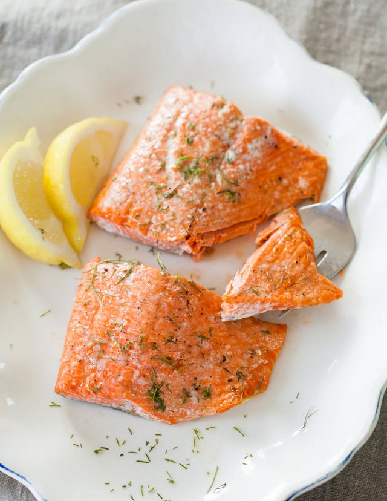

Baked Salmon
\

Baked Salmon Dinner
Ingredients
- 1 pound salmon fillet
- 1/2 cup lemon juice
- 1/4 cup butter, melted
- 1 clove garlic, minced
- 1/2 teaspoon dried dill
- 1/2 teaspoon salt
- 1/4 teaspoon ground black pepper
Steps
- Preheat oven to 400 degrees F (200 degrees C).
- Place salmon fillet in a lightly greased 9x13 inch baking dish.
- In a small bowl, mix together lemon juice, butter, garlic, dill, salt, and pepper. Pour over salmon.
- Bake in preheated oven for 15 to 20 minutes, or until salmon flakes easily with a fork.